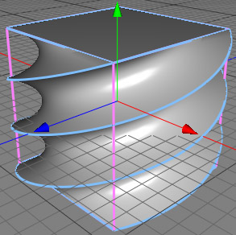

The twist modifier rotates the vertices of its parent object around the Y-axis. As with every modifier object, a higher tessellation in the parent object will create better looking results.
 angle=270°
Properties